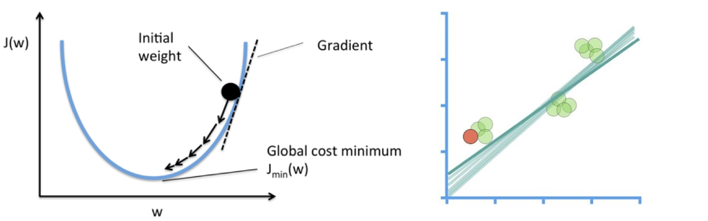
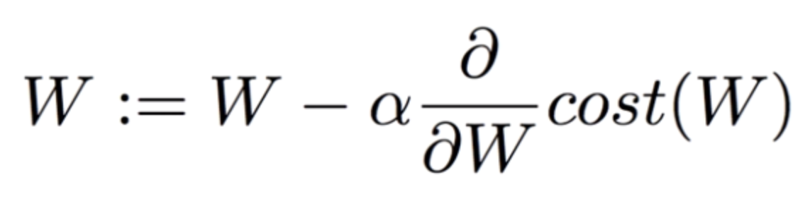
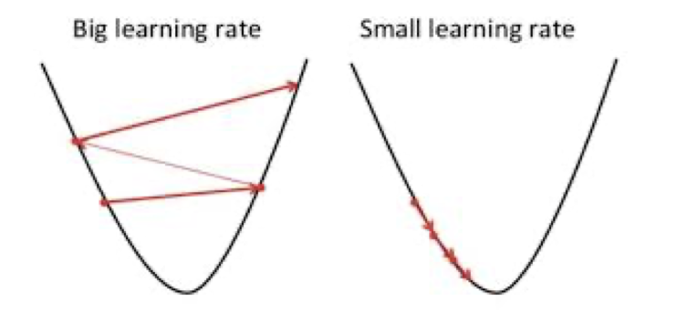
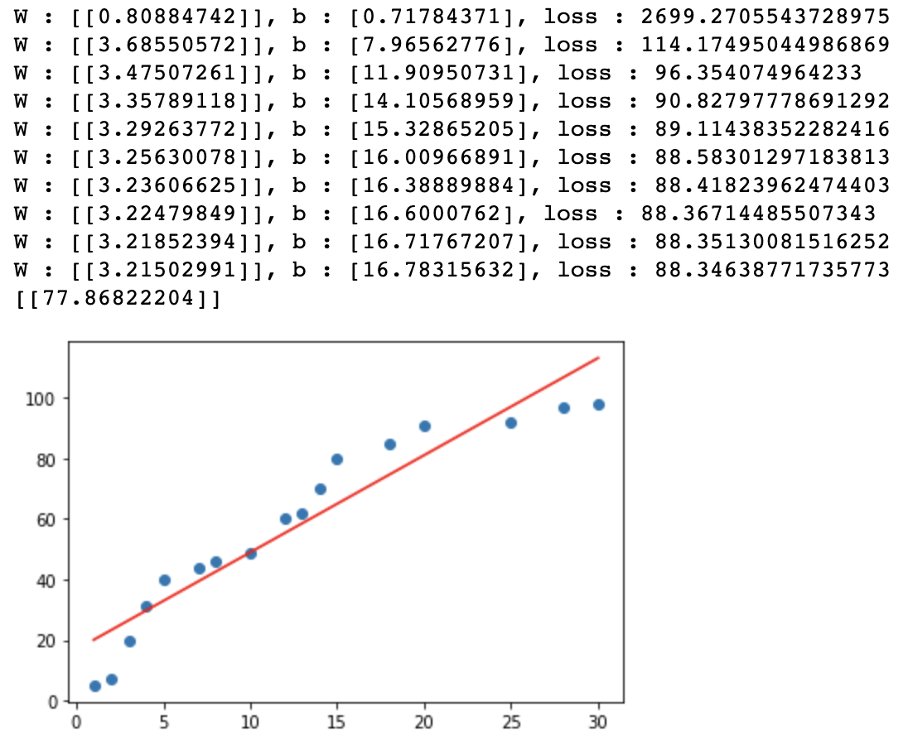

[Data Science] Linear Regression
Linear Regression Model
Linear Regression을 함수로 표현하기전에 경사하강법에 대하여 알아보도록 하겠습니다.
학습데이터를 관통하는 하나의 직선이 존재한다는 Hypothesis를 만들어 낼 수 있으며 그 식은 H(x) = Wx +b라고 표현하였습니다. 그렇다면 최적의 Hypothesis를 만들기 위해서는 loss function 혹은 cost function 의 최소값을 구해야합니다.하지만 이것을 구하기 쉽지 않기때문에 우리는 경사하강법을 이용하여 최소값에 근사한 값을 구해보도록 하겠습니다.
경사하강법
아래 그림대로 손실함수 그래프를 따라가면서 손실함수가 최소가 되는 지점에서의 W를 구하는 것입니다. W가 변화하면서 Hypothesis는 오른쪽 아래의 그림처럼 변화하게 됩니다.

이것을 수식으로 표현하면 하기와 같습니다.

경사하강법의 다음 도착점은 W와 α(Learning rate) 그리고 손실함수의 미분값곱의 차로 결정됩니다. 여기서 Learning rate 값이 너무 크거나 작으면 하기 그림과 같은 상황이 벌어지게 됩니다.

그렇기 때문에 적절한 α을 찾아서 배정해주는 것이 중요합니다.
그렇다면 이번에는 코드로서 표현을 해보도록 하겠습니다. 학습데이터는 이전시간에 사용하였던 공부시간과 시험점수에 대한 데이터를 동일하게 사용하도록 하겠습니다.
코드를 구현하는 절차는 하기와 같습니다.
Training Data Set을 준비 머신러닝에 입력으로 사용될 데이터를 NumPy array(ndarray)형태로 준비합니다.
Linear Regression Model을 정의 y = Wx + b => model을 프로그램적으로 표현합니다. W 와 b에 대한 변수 선언한 후 초기값은 랜덤값을 이용합니다.
loss function을 정의
손실함수(loss function)에 대한 코드를 작성 후 matrix처리해야해요
learning rate의 정의
일반적으로 customizing이 되는 값으로 초기에는 0.001정도로 설정해서 사용하고 loss값을 보고 수치를 조절할 필요가 있습니다.
학습을 진행
반복적으로 편미분을 이용해서 W와 b를 update하는 방식으로 구현
import numpy as np
import matplotlib.pyplot as plt
data = {'공부시간(x)' : [1,2,3,4,5,7,8,10,12,13,14,15,18,20,25,28,30],
'시험점수(t)':[5,7,20,31,40,44,46,49,60,62,70,80,85,91,92,97,98]}
x_data = np.array([1,2,3,4,5,7,8,10,12,13,14,15,18,20,25,28,30]).reshape(-1,1)
t_data = np.array([5,7,20,31,40,44,46,49,60,62,70,80,85,91,92,97,98]).reshape(-1,1)
#데이터의 분포를 scatter로 확인
# plt.scatter(x_data.ravel(), y_data.ravel()) # ravel() 무조건 1차원으로 변경
# plt.show()
# Linear Regression Model을 정의
# y = Wx+b
W = np.random.rand(1,1) # matrix
b = np.random.rand(1) # scalar
# H = W*x + b # y대신에 Hypothesis 를 나타내는 H를 변수명으로 썼어요!
# loss function
def loss_func(x,t):
y = np.dot(x,W)+b
return np.mean(np.power((t-y),2)) # (t-y)^2/n
# 미분함수 (중앙차분)
def numerical_derivative(f, x):
delta_x = 1e-4
derivative_x = np.zeros_like(x)
it = np.nditer(x, flags=['multi_index'])
while not it.finished:
idx = it.multi_index
tmp = x[idx]
x[idx]= tmp + delta_x
fx_plus_delta = f(x)
x[idx]= tmp - delta_x
fx_minus_delta = f(x)
derivative_x[idx] = (fx_plus_delta - fx_minus_delta) / (2 * delta_x)
x[idx] = tmp
it.iternext()
return derivative_x
# prediction
def predict(x):
return np.dot(x,W)+b # Hypthesis, Linear Regression Model
# learning rate라는 상수가 필요, 정의해야해요!
learning_rate = 0.0001
# 미분을 진행할 loss_func에 대한 lambda 함수를 정의
f = lambda x: loss_func(x_data, t_data)
# 학습을 진행!!
# 반복해서 학습을 진행 ( W 와 b를 update하면서 반복적으로 학습을 진행)
for step in range(90000):
W = W -learning_rate * numerical_derivative(f, W) # W의 편미분
b = b -learning_rate * numerical_derivative(f, b) # W의 편미분
if step % 3000 == 0:
print('W : {}, b : {}, loss : {}'.format(W,b,loss_func(x_data, t_data)))
# 학습 종료 후
print(predict(19))
plt.scatter(x_data.ravel(), t_data.ravel())
plt.plot(x_data.ravel(), np.dot(x_data,W)+b, 'r')
plt.show()
